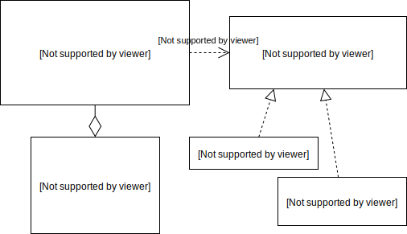

class: center, middle, main-title # Software Design and Architecture Part 2: Modelling the domain --- ## Today - Content - Modelling main concepts within a software system - CRC cards - UML class diagrams - What are the key properties of a design? - Design tips - Questions, ideas, comments - [Sli.do #VUSE1906](https://app.sli.do/event/2nqavhzp) --- ## Recap: Model > A model **represents some aspect of reality** or an idea that is of interest. > A model is a **simplification**. > It is an interpretation of reality that **abstracts** the aspects > relevant to solving the problem at hand and **ignores extraneous detail**. > <br><br>— <cite>Eric Evans, [Domain-Driven Design](https://www.goodreads.com/book/show/179133.Domain_Driven_Design), 2003</cite> -- A model is a human construct to help us better understand the real world. --- ## Domain > Every software program relates to some activity or interest of its user. > That subject are to which the user applies the program is the **domain** of the software. > <br><br>— <cite>Eric Evans, [Domain-Driven Design](https://www.goodreads.com/book/show/179133.Domain_Driven_Design), 2003</cite> --- ## Domain model 1. Is way to structure how we choose to think about the domain -- 1. Is a backbone for *ubiquitous language* -- 1. Is **reflected in code** --- ## Describing OO models - CRC cards - UML diagrams --- ## CRC cards <table style="width: 80%"> <tr> <th colspan="2">Customer</th> </tr> <tr> <td> <ul> <li>Identifies self</li> <li>Creates new order</li> <li>Lists own orders</li> </ul> </td> <td> <ul> <li>Order</li> </ul> </td> </tr> </table> -- - CRC means [Class-Responsibility-Collaboration](http://c2.com/doc/oopsla89/paper.html) - **Class** - name of the class - **Responsibilities** - what can this do? - **Collaborators** - who can help? (by providing information or performing work) --- ## CRC cards <table style="width: 80%"> <tr> <th colspan="2">Customer</th> </tr> <tr> <td> <ul> <li>Identifies self</li> <li>Creates new order</li> <li>Lists own orders</li> </ul> </td> <td> <ul> <li>Order</li> </ul> </td> </tr> </table> -- <table style="width: 80%"> <tr> <th colspan="2">Order</th> </tr> <tr> <td> <ul> <li>Maintains order items</li> <li>Represents itself as JSON</li> <li>Calculates price</li> <li>Dispatches itself</li> </ul> </td> <td> <ul> <li>Pricing policy</li> <li>Shipping company</li> </ul> </td> </tr> </table> --- ## UML class diagram Describes: - static structure (classes in an OO system) - (optionally) their attributes and methods - connections between classes -- Does not describe: - details of how the classes interact with each other - how methods are implemented (algorithmic details) --- ## Classes within a diagram .pull-left[ <table style="width: 95%"> <tr> <th colspan="2">Customer</th> </tr> <tr> <td> - email: String<br> - orders: List< Order > </td> </tr> <tr> <td> + id(): String<br> + newOrder(): Order<br> + listOrders(): List< Order > </td> </tr> </table> ] -- .pull-right[ <table style="width: 95%"> <tr> <th colspan="2">Order</th> </tr> <tr><td></td></tr> <tr> <td> + add(Product product): Order<br> + remove(Product product): Order<br> + asJson(): Json<br> + price(PricingPolicy policy): Price<br> + dispatch(ShippingCompany company): DateTime </td> </tr> </table> ] -- .pull-left[ <table style="width: 95%"> <tr> <th colspan="2"><< interface >><br>PricingPolicy</th> </tr> <tr><td></td></tr> <tr> <td> + price(List < Product > ordered): Price </td> </tr> </table> ] -- .pull-right[ <table style="width: 95%"> <tr> <th colspan="2"><< interface >><br>ShippingCompany</th> </tr> <tr><td></td></tr> <tr> <td> + createTrackingId(Address pickup, Address delivery): String<br> + schedulePickup(String trackingId): DateTime<br> + isDelivered(String trackgingId): boolean </td> </tr> </table> ] --- ## Relationships within a diagram  --- ## Recap: Design alternatives - There are many alternative designs - not all equally good -- - A designer generates alternative designs and evaluates them - A great example of [exploring alternative models](https://www.youtube.com/watch?v=T29WzvaPNc8) --- ## Goals of a good design - First of all, it must fulfil the requirements -- - Then, it should both: - Help **manage complexity** - Support distribution of work - Support future changes -- - All of the above lead to *modularity* and *separation of responsibilities* --- ## Key properties - Cohesion - Coupling --- ## Cohesion - *Why are the parts gruped together the way they are?* -- - Not measurable quantitatively -- - The degree to which the parts **belong together** -- - Many <a href="https://en.wikipedia.org/wiki/Cohesion_(computer_science)#Types_of_cohesion">types of cohesion</a> - **Best**: the parts collectively provide a specific behaviour - **Worst**: no reason at all --- ## Coupling - *To what extent is one part connected to other parts?* -- - Can be measured quantitatively -- - A measure of the **interdependence** among parts -- - Both *kind* and *quantity* - **Loose** vs tight -- - The more **coupled** the parts are, the **harder** to think about them separately --- ## How to create good designs? - There is no formula -- - ... beyond **experience** and **reflection** -- - Ask questions -- - How can I avoid duplication? -- - How can I avoid exposing internal details? -- - How can I reduce the number dependencies? -- - What if I split this thing into two? -- - What if I merged these two things into one? -- - ... --- ## Some guidelines for OO design -- - Focus on responsibilities and behaviour, not on data - Anthropomorphism -- - Classes representing the domain model should do all domain work - Rich (instead of anemic) domain model -- - Hide implementation details - Encapsulation -- - Avoid duplication (DRY) - A change should be limited to one place -- - Keep it simple (KISS) -- - Prefer composition over inheritance --- ## Key takeaways - We discussed object-oriented (OO) modelling - Focus is on modelling responsibilities and behaviour, not data - UML class diagrams can be used for this purpose --- ## Reading assignment Mandatory: - Blog post: [On the criteria to be used in decomposing systems into modules](https://blog.acolyer.org/2016/09/05/on-the-criteria-to-be-used-in-decomposing-systems-into-modules/) Recommended: - Paper: [D.L. Parnas. On the criteria to be used in decomposing systems into modules, 1971](https://www.win.tue.nl/~wstomv/edu/2ip30/references/criteria_for_modularization.pdf) - Talk: [E. Evans. Modelling Time](https://www.youtube.com/watch?v=T29WzvaPNc8) - Paper: [K. Beck, W. Cunningham. A Laboratory For Teaching Object-Oriented Thinking, 1989](http://c2.com/doc/oopsla89/paper.html) - Book: [E. Evans. Domain-Driven Design, 2003](https://www.goodreads.com/book/show/179133.Domain_Driven_Design) --- class: middle, center # Questions? --- ## Next time - Finish with the topic of design - How to describe and communicate interactions between objects? - How to organize large domain models?